11 Means, Variances, and Sample Averages
$$ \newcommand{X}{} \newcommand{Y}{} % A hex digit after # inside a macro body is eaten by build-time expansion, so digit-leading hexes spell # via .
$$
The Center Is an Expectation
We’ve been working with these distributions and we’ve been talking about their sampling distributions. And we’ve been talking about them having a center. This is what we mean by that.
Here is the sampling distribution of the sample frequency from 100 independent uniform calls to a population where 70% of people say Yes. The horizontal axis is the frequency we hear in a sample.
Remember: histograms are for counting dots. Each purple dot above is one sample’s \hat\theta, and the height of a bar is the fraction of infinitely many dots like this standing at that position, so summing position times bar height is averaging the dots. The expectation is the average of infinitely many dots.
The green line marks the population frequency. The solid blue line estimates the expectation by averaging many repeated samples. The dashed and dotted blue pairs mark intervals around that center containing at least two-thirds and 95% of those estimates. Here we’re looking at the solid center line.
What did we mean when we talked about a center? We meant an expected value — this long run sum.
Here’s the definition. The expectation of a random variable is its probability-weighted average, \mathop{\mathrm{E}}[X] = \sum_x \textcolor{#EF476F}{x}\textcolor{#118AB2}{P(X=x)}. That means summing, over the x axis, the product of the x, the position along the x-axis and the P(X=x), the bar height at that position. In the picture above, the positions are the values \hat\theta takes and the bar heights are their probabilities.
Does that tell us where the distribution is located, i.e., where draws are likely to be? If not, why is that useful? On this picture the answer to the first question is yes.
Why We Liked This
Why did we like this? It’s because it’s right. The blue line is on top of the green line.
The reason we center here is it works. The center is exactly what we wanted to estimate. We call estimators like this unbiased and we’ll see why these are unbiased and how to know that things are unbiased.
The motivation for using the expectation doesn’t have to be complicated at all. It can just be that you want to center the thing on the thing you want to estimate. We’re always talking about how to calibrate effectively so that we contain the center of the distribution a certain frequency of the time, and that’s only useful if the center of the distribution is where you want it to be.
What do we do when we don’t know the formula for the sampling distribution? In a few chapters, we’ll bootstrap it. Or we can calculate its mean and variance, which summarize its location and spread, without finding the whole distribution.
What’s Special about Expectations: Linearity
Getting a sampling distribution meant building the joint: a grid for two calls, a cube for three, a layer more for every call after that. What’s so special about expectations that they don’t make us do that? Linearity.
Here is the response grid for our population again, three zeros and one one, sampling with replacement. Rows are the first response and columns the second; each cell contains the probability of that response pair.
The long way to the total S=Y_1+Y_2 reads the cells off the grid: each cell’s total times that cell’s probability, added up. The top left cell is two zeros, so its total is 0; the two off-diagonal cells have total 1; the bottom right cell is two ones, so its total is 2, \mathop{\mathrm{E}}[S]=0\times\frac9{16}+1\times\frac3{16}+1\times\frac3{16}+2\times\frac1{16} =\frac{8}{16}=\frac12.
That same sum regroups into a first-call pass and a second-call pass. Every cell’s total is the first response plus the second, so \mathop{\mathrm{E}}[S]=\underbrace{0\times\frac{9+3}{16}+1\times\frac{3+1}{16}}_{\text{the rows}} \;+\;\underbrace{0\times\frac{9+3}{16}+1\times\frac{3+1}{16}}_{\text{the columns}} =\frac14+\frac14=\frac12. The two passes come out the same here because both calls have the same distribution; what matters is what each used. The first pass used only the row totals, and the rows are the distribution of the first response. The second used only the column totals, which are the distribution of the second. So \mathop{\mathrm{E}}[Y_1+Y_2]=\mathop{\mathrm{E}}[Y_1]+\mathop{\mathrm{E}}[Y_2], and the joint entered only through its margins.
We didn’t need the whole grid, only its margins. And we didn’t need the grid to get the margins: they are the one-call distributions, which we already had.
The same regrouping works for three calls, or n, without the cube.
\begin{aligned} \mathop{\mathrm{E}}[aY+bZ] &=\mathop{\mathrm{E}}[aY]+\mathop{\mathrm{E}}[bZ]\\ &=a\mathop{\mathrm{E}}[Y]+b\mathop{\mathrm{E}}[Z] \qqtext{for random variables} Y, Z \qqtext{and numbers} a, b. \end{aligned}
There are two things going on here. To average a sum of two things, we can take two averages and sum. To average a constant times a random variable, we multiply the random variable’s average by the constant. In other words, we can distribute expectations and can pull constants out of them. These rules do not require the two random variables to be independent.
Proof of Linearity
In essence, it comes down to the fact that all we’re doing is summing. Expectations are probability-weighted sums. And we’re looking at the expectation of a sum. And we can change the order we sum in without changing what we get. The marginalization step sums along a row or column of the joint distribution.
\small{ \begin{aligned} \mathop{\mathrm{E}}\p*{ a Y + b Z } &\overset{\texttip{\small{\text{?}}}{ by definition of expectation}}{=} \sum_{y}\sum_z (a y + b z) \ P(Y=y, Z=z) \\ &\overset{\texttip{\small{\text{?}}}{changing the order in which we sum}}{=} \sum_{y}\sum_z a y \ P(Y=y, Z=z) + \sum_{z}\sum_y b z \ P(Y=y, Z=z) \\ &\overset{\texttip{\small{\text{?}}}{pulling constants out of the inner sums}}{=} \sum_{y} a y \ \sum_z P(Y=y,Z=z) + \sum_{z} b z \ \sum_y P(Y=y,Z=z) \\ &\overset{\texttip{\small{\text{?}}}{summing to get marginal probabilities from our joint }}{=} \sum_{y} a y \ P(Y=y) + \sum_{z} b z \ P(Z=z) \\ &\overset{\texttip{\small{\text{?}}}{ pulling constants out of the remaining sum }}{=} a\sum_{y} y \ P(Y=y) + b\sum_{z} z \ P(Z=z) \\ &\overset{\texttip{\small{\text{?}}}{by definition}}{=} a\mathop{\mathrm{E}}Y + b \mathop{\mathrm{E}}Z. \end{aligned} }
Unbiasedness
The margins are free, so the expected value of our sample mean is our population mean.
A Tool: Probability as Expectation
A tool we use here is understanding probability as an expectation. Write the indicator that call i selected person j, 1_{=j}(J_i) = \begin{cases} 1 & \qqtext{ for } J_i = j \\ 0 & \qqtext{ otherwise} \end{cases} It is one on exactly the calls that landed on person j, so its probability-weighted average is the probability of landing there, \mathop{\mathrm{E}}[1_{=j}(J_i)] = 0\,P(J_i\ne j) + 1\,P(J_i=j) = P(J_i=j).
This is a principle, not a notational trick: probabilities are expectations of indicators. The indicator keeps exactly the part of the random outcome that matters for the event and throws everything else away. Its probability-weighted average is the probability that it is one. Consequently, every rule we prove for expectations is also a tool for probabilities.
For a picture of the same operation on a different event, let X count the Yeses in five independent calls to a population where 40% say Yes.
On the left is its distribution, with the outcomes in the event X\ge3 in green. On the right is the distribution of 1_{\ge3}(X), which has just two outcomes: it is zero with the gray probability and one with the green probability, 0.317. That green height is both P(X\ge3) and \mathop{\mathrm{E}}[1_{\ge3}(X)] — the same number read two ways.
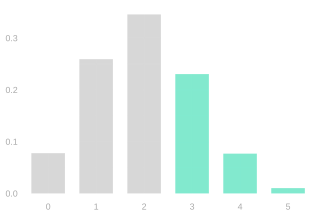
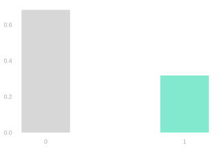
Sampling Uniformly at Random
A die roll: equally likely to be any side. The top of a shuffled deck: equally likely to be any card. Where a spinner lands: equally likely to be in any of its equal-sized sectors. These are ways to select uniformly at random.
For sampling, the possibilities are people. Number the people in a population from 1 to m. Sampling one person uniformly at random means each person has probability 1/m of being selected, P(J_i=j)=\frac1m \qqtext{ for } j = 1 \ldots m.
The Three Schemes
The population has 100 people: 40 respond one and 60 respond zero. Compare samples of 5, 20, and 80 people under three schemes:
- With replacement: select each person uniformly and independently from the whole population.
- Without replacement: select uniformly from the people not yet chosen.
- Random-start cycle: arrange the 40 ones followed by the 60 zeros around a circle. Select a starting person uniformly, then take consecutive people.
Below are those nine cases: sample sizes 5, 20 and 80 down the rows, the three schemes across the columns. Where are the distributions of the sample average centered?
The bars are probabilities and the purple dots are sample averages; the highlighted dot is one of those averages. The green line marks the population frequency, 0.4. The solid blue line estimates each distribution’s center. The dashed and dotted pairs mark the same two-thirds and 95% intervals as in the opening picture.
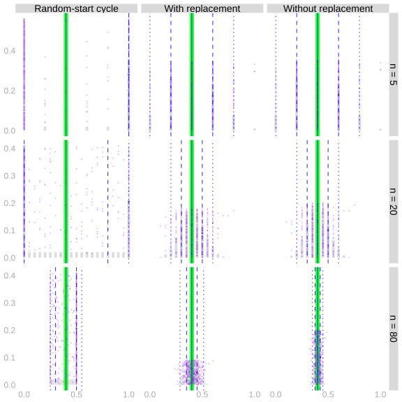
The centers lie on the population frequency in all nine cases. Why does changing the scheme or the sample size leave that center alone?
Average over the Population
Let the fixed population values be y_1\ldots y_m, with population mean \mu. On draw i we select person J_i and observe Y_i=y_{J_i}.
There is an indicator for each possible selection, and exactly one of them is one, so this sum picks out the selected person’s value:
Y_i=\sum_{j=1}^{m}y_j1_{=j}(J_i).
Linearity and the indicator trick turn its expectation into the population average:
\begin{aligned} \mathop{\mathrm{E}}[Y_i] &\overset{\texttip{\small{\text{?}}}{linearity}}{=}\sum_{j=1}^{m}y_j\mathop{\mathrm{E}}[1_{=j}(J_i)]\\ &\overset{\texttip{\small{\text{?}}}{probability as expectation}}{=}\sum_{j=1}^{m}y_jP(J_i=j)\\ &\overset{\texttip{\small{\text{?}}}{uniform sampling}}{=}\frac{1}{m}\sum_{j=1}^{m}y_j\\ &=\mu. \end{aligned}
Unbiasedness of the Sample Mean
The sample mean is \hat\mu=n^{-1}\sum_{i=1}^nY_i. Claim. It is an unbiased estimator of the population mean. \mathop{\mathrm{E}}[\hat\mu] = \mu
\begin{aligned} \mathop{\mathrm{E}}\sb*{\frac1n\sum_{i=1}^n Y_i} &\overset{\texttip{\small{\text{?}}}{via linearity}}{=} \frac1n\sum_{i=1}^n \mathop{\mathrm{E}}[Y_i] \\ &\overset{\texttip{\small{\text{?}}}{via equal-probability sampling}}{=} \frac1n\sum_{i=1}^n \mu \\ &= \frac1n \times n \times \mu = \mu. \end{aligned}
So the sample mean is an unbiased estimator of the population mean, and all we used to show it is that each call is equally likely to reach anyone. We never needed its sampling distribution, or even the joint distribution of the calls. That’s why it didn’t matter whether the calls were independent: with replacement, without it, and around the cycle, each call on its own is uniform, and linearity of expectation takes the calls one at a time.
That is what we wanted from a center. The dashed and dotted pairs in the opening picture are distances from the center of the sampling distribution: an estimate falls inside the inner pair at least two-thirds of the time and inside the outer pair at least 95% of the time. Unbiasedness is what makes them distances from the population mean. Center an estimator somewhere else and the same intervals would be just as well calibrated around the wrong number.
Next we do the same for its spread.
Variance measures spread
Variance Is an Expectation
The centered variable Z=Y-\mathop{\mathrm{E}}[Y] is a random variable with its mean subtracted; it records a signed distance from the mean. Its expectation is zero: \mathop{\mathrm{E}}[Z]=\mathop{\mathrm{E}}[Y]-\mathop{\mathrm{E}}[Y]=0. Positive and negative distances cancel. To measure their size, square them before averaging. The variance is the expected squared distance from the mean: \operatorname{Var}(Y)=\mathop{\mathrm{E}}[(Y-\mathop{\mathrm{E}}[Y])^2]=\mathop{\mathrm{E}}[Z^2]. The picture follows twenty centered observations. The gray dots are their signed distances from the mean, so the green mean line starts at zero. A bar’s height records the fraction of observations at that distance. To square a distance, first square its length on its original side of zero, then fold the negative side over. The original dots and the barbells connecting them to their signed squares stay visible as the distribution changes. Teal tracks observations from the negative side; pink tracks those from the positive side. The final histogram counts squared distances, whose average is the variance.
Data. Each gray dot is one centered observation. The gray histogram counts them. Positive and negative distances cancel in their average, zero.
Barbells. Keep every data dot. Connect it to its signed square: for example, -1.5 moves to -2.25, while 0.5 moves to 0.25. The sign still records which side of the mean the observation came from.
Signed-square distribution. Replace the gray histogram by the distribution of the signed-square endpoints. The original dots and connecting barbells remain, so we can follow each observation through the transformation.
Fold and average. Fold the negative histogram onto the positive side and stack their probabilities. The data dots and barbells remain as a reference. The new green line marks the average squared distance—the variance.
Squaring changes the units. The standard deviation takes us back to the units of Y: \operatorname{sd}(Y)=\sqrt{\operatorname{Var}(Y)}.
Calculating variance from two calls
Variance involves squares. We use the same tables, adding the quantities we want to average.
Remember how we calculated an expectation above. We could average over the call sequences directly, or first collect them into response sequences. For a sum, linearity let us go further: calculate each response’s expectation separately, then add.
The population 0,0,0,1 has mean \mu=1/4. For person j, the centered response is z_j=y_j-\mu:
| Person j | Response y_j | Centered response z_j | Square z_j^2 |
|---|---|---|---|
| 1 | 0 | -1/4 | 1/16 |
| 2 | 0 | -1/4 | 1/16 |
| 3 | 0 | -1/4 | 1/16 |
| 4 | 1 | 3/4 | 9/16 |
The centered population averages to zero. Its squares average to 3/16, the population variance. On call i we select person J_i, observe Y_i=y_{J_i}, and obtain the centered response Z_i=z_{J_i}=Y_i-\mu. Under all three sampling schemes, each person has marginal probability 1/4, so \mathop{\mathrm{E}}[Z_i]=0 and \mathop{\mathrm{E}}[Z_i^2]=3/16.
For the variance of a two-call total, we must average a square of a sum. Write the square as a product of two copies of the sum, one pink and one teal: (Z_1+Z_2)^2=\textcolor{#EF476F}{(Z_1+Z_2)}\textcolor{#118AB2}{(Z_1+Z_2)} =\textcolor{#EF476F}{Z_1}\textcolor{#118AB2}{Z_1} +\textcolor{#EF476F}{Z_1}\textcolor{#118AB2}{Z_2} +\textcolor{#EF476F}{Z_2}\textcolor{#118AB2}{Z_1} +\textcolor{#EF476F}{Z_2}\textcolor{#118AB2}{Z_2}. We already know the expectations of the squares. The middle terms use two calls together. Add their products to the joint table and calculate them in the same way.
With Replacement: Products Factor
Each of the sixteen call sequences has probability 1/16. As in the last chapter, group them into the four response sequences:
| Y_1 | Y_2 | Probability | Z_1Z_2 | Product times probability |
|---|---|---|---|---|
| 0 | 0 | 9/16 | 1/16 | 9/256 |
| 0 | 1 | 3/16 | -3/16 | -9/256 |
| 1 | 0 | 3/16 | -3/16 | -9/256 |
| 1 | 1 | 1/16 | 9/16 | 9/256 |
The last column adds to \mathop{\mathrm{E}}[Z_1Z_2]=\frac9{256}-\frac9{256}-\frac9{256}+\frac9{256}=0. We can also obtain this expectation from the two marginal distributions. Each centered response is -1/4 with probability 3/4 and 3/4 with probability 1/4. Every joint probability in the table is the product of its two marginal probabilities. Substituting that product lets us factor the sum: \begin{aligned} \mathop{\mathrm{E}}[Z_1Z_2] &=\left(-\frac14\right)\left(-\frac14\right)\textcolor{#EF476F}{\frac 34}\textcolor{#118AB2}{\frac 34} +\left(-\frac14\right)\left(\frac34\right)\textcolor{#EF476F}{\frac 34}\textcolor{#118AB2}{\frac 14}\\ &\quad+\left(\frac34\right)\left(-\frac14\right)\textcolor{#EF476F}{\frac 14}\textcolor{#118AB2}{\frac 34} +\left(\frac34\right)\left(\frac34\right)\textcolor{#EF476F}{\frac 14}\textcolor{#118AB2}{\frac 14}\\ &=\left\{\left(-\frac14\right)\textcolor{#EF476F}{\frac 34}+\left(\frac34\right)\textcolor{#EF476F}{\frac 14}\right\} \left\{\left(-\frac14\right)\textcolor{#118AB2}{\frac 34}+\left(\frac34\right)\textcolor{#118AB2}{\frac 14}\right\}\\ &=\mathop{\mathrm{E}}[Z_1]\mathop{\mathrm{E}}[Z_2]=0. \end{aligned} Here the calculation factors multiplicatively. The joint probabilities have the product structure we called independence in the last chapter.
Whenever the joint probabilities factor, the same regrouping factors the expectation of a product into the product of expectations.
Without Replacement: Keep the Joint Probabilities
Now change the sampling scheme. The population table stays exactly the same. So do the individual response distributions: each centered response still has expectation zero and square expectation 3/16.
The joint probabilities change. Diagonal call sequences are impossible, and each of the twelve remaining sequences has probability 1/12. Grouping those calls into responses produces:
| Y_1 | Y_2 | Probability | Z_1Z_2 | Product times probability |
|---|---|---|---|---|
| 0 | 0 | 1/2 | 1/16 | 1/32 |
| 0 | 1 | 1/4 | -3/16 | -3/64 |
| 1 | 0 | 1/4 | -3/16 | -3/64 |
| 1 | 1 | 0 | 9/16 | 0 |
The probabilities no longer factor into the two marginal probabilities. We can still average the product, but must use these joint probabilities: \mathop{\mathrm{E}}[Z_1Z_2]=\frac1{32}-\frac3{64}-\frac3{64}+0=-\frac1{16}. That is not \mathop{\mathrm{E}}[Z_1]\mathop{\mathrm{E}}[Z_2]=0. Opposite-sign pairs now carry half the probability, so the negative products outweigh the positive ones.
The same expansion works without independence, but we must keep the cross terms: \begin{aligned} \operatorname{Var}(Y_1+Y_2) &=\mathop{\mathrm{E}}[(Z_1+Z_2)^2]\\ &=\mathop{\mathrm{E}}[Z_1^2]+\mathop{\mathrm{E}}[Z_1Z_2]+\mathop{\mathrm{E}}[Z_2Z_1]+\mathop{\mathrm{E}}[Z_2^2]\\ &=\frac3{16}-\frac1{16}-\frac1{16}+\frac3{16}=\frac14. \end{aligned} With replacement the same expansion has two zero middle terms, so the total’s variance is 3/8.
Variance of a sample mean
However many calls we take, squaring a sum produces products involving at most two calls. Remember the two-call tables: call sequences, then response sequences, then totals. For variance, we need not build that whole distribution. Linearity lets us average those terms one at a time.
Let the population have m responses y_1\ldots y_m, mean \mu, and variance \sigma^2. Write z_j=y_j-\mu for each centered population response and Z_i=Y_i-\mu for the centered response on call i. Sample uniformly with replacement. For any function f, the calculation we did for \mathop{\mathrm{E}}[Y_i] gives \mathop{\mathrm{E}}[f(Y_i)]=\frac1m\sum_{j=1}^m f(y_j). With f(y)=(y-\mu)^2, the squared-distance picture is \mathop{\mathrm{E}}[\textcolor{#118AB2}{Z_i^2}]=\frac1m\sum_{j=1}^m(y_j-\mu)^2=\textcolor{#06D6A0}{\sigma^2}. The centered responses have mean zero: \begin{aligned} \mathop{\mathrm{E}}[\textcolor{#EF476F}{Z_i}] &\overset{\texttip{\small{\text{?}}}{definition of the centered response}}{=}\mathop{\mathrm{E}}[Y_i-\mathop{\mathrm{E}}[Y_i]]\\ &\overset{\texttip{\small{\text{?}}}{linearity}}{=}\mathop{\mathrm{E}}[Y_i]-\mathop{\mathrm{E}}[Y_i]=0. \end{aligned} For n calls, the sample mean is \hat\mu=n^{-1}\sum_iY_i. It is unbiased, as we proved above, so its variance is the expected square of \hat\mu-\mu=n^{-1}\sum_iZ_i.1
There are n square terms, one for each call, and n(n-1) ordered products of distinct calls. Each product expectation uses only the joint distribution of those two calls. Under uniform sampling with replacement, every distinct pair has the same joint distribution; the same is true under uniform sampling without replacement. In either case, one two-call calculation supplies every cross term. We have lost the product shortcut without replacement, not the saving from linearity.
With replacement, every pair of calls factors on its own.2 There are m^{n-2} sequences in which call i selects person k and call j selects person l, one for each thing the other n-2 calls can do, and each has probability 1/m^n. Their total probability is m^{n-2} \times 1/m^n = 1/m^2 = P(J_i=k)P(J_j=l). The centered responses Z_i and Z_j are functions of those two calls, so the factorization just proved and their zero means imply \mathop{\mathrm{E}}[\textcolor{#EF476F}{Z_i}\textcolor{#118AB2}{Z_j}]=\mathop{\mathrm{E}}[\textcolor{#EF476F}{Z_i}]\mathop{\mathrm{E}}[\textcolor{#118AB2}{Z_j}]=0 \qquad (i\ne j).
When i=j, the product is a square: \mathop{\mathrm{E}}[\textcolor{#EF476F}{Z_i}\textcolor{#118AB2}{Z_i}]=\mathop{\mathrm{E}}[Z_i^2]=\operatorname{Var}(Y_i)=\textcolor{#06D6A0}{\sigma^2}. These are the two cases we will use when we square the sample mean: \begin{aligned} \operatorname{Var}(\hat\mu) &\overset{\texttip{\small{\text{?}}}{center}}{=}\mathop{\mathrm{E}}\left[\left(\frac1n\sum_{i=1}^nZ_i\right)^2\right]\\ &\overset{\texttip{\small{\text{?}}}{square}}{=}\frac1{n^2}\mathop{\mathrm{E}}\left[ \textcolor{#EF476F}{\sum_{i=1}^nZ_i} \textcolor{#118AB2}{\sum_{j=1}^nZ_j}\right]\\ &\overset{\texttip{\small{\text{?}}}{linearity}}{=}\frac1{n^2}\textcolor{#EF476F}{\sum_{i=1}^n} \textcolor{#118AB2}{\sum_{j=1}^n}\mathop{\mathrm{E}}[\textcolor{#EF476F}{Z_i}\textcolor{#118AB2}{Z_j}]\\ &\overset{\texttip{\small{\text{?}}}{equal indices give a squared centered response; distinct indices give a product with expectation zero}}{=}\frac1{n^2}\textcolor{#EF476F}{\sum_{i=1}^n} \textcolor{#118AB2}{\sum_{j=1}^n} \begin{cases} \sigma^2 & \textcolor{#EF476F}{i}=\textcolor{#118AB2}{j},\\ 0 & \textcolor{#EF476F}{i}\ne\textcolor{#118AB2}{j} \end{cases}\\ &\overset{\texttip{\small{\text{?}}}{only the equal-index terms remain}}{=}\frac1{n^2}\sum_{i=1}^n\mathop{\mathrm{E}}[\textcolor{#EF476F}{Z_i}\textcolor{#118AB2}{Z_i}]\\ &\overset{\texttip{\small{\text{?}}}{there are n equal-index terms, each with expectation equal to the population variance}}{=}\frac{n\sigma^2}{n^2} =\frac{\sigma^2}{n}. \end{aligned} Taking a square root, \operatorname{sd}(\hat\mu)=\frac{\sigma}{\sqrt n}.
The standard error is the standard deviation of whatever estimator you are talking about. So \sigma/\sqrt n is the standard error of \hat\mu, while \sigma itself is the standard deviation of a single response.
There is no standard way of telling those apart in symbols, so we will write \mathrm{se}_{n} for the standard error of an average of n responses — the subscript is how many we are averaging — and keep \sigma for the spread of the responses themselves: \mathrm{se}_{n}=\frac{\sigma}{\sqrt n}, \qquad \widehat{\mathrm{se}_{n}}=\frac{\hat\sigma}{\sqrt n}. The hatted version is the one we can actually calculate, because it uses the standard deviation of the responses we have rather than the population’s. Quadrupling the sample size halves \mathrm{se}_{n}.
The calculation of \operatorname{Var}(\hat\mu) used independence in exactly one place, where the products of distinct centered responses dropped out. Sampling without replacement, those products are not zero. Return to the population of 100 people, with 40 ones and 60 zeros. Here are the distributions of the sample average from 80 calls under the two schemes.
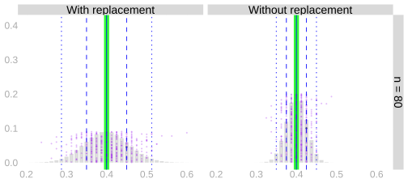
Same center, and not the same spread.
Dependence changes the spread
This is our population of 100 people again: 40 ones and 60 zeros, the same for all three schemes. Only the random-start cycle puts them in order around a circle. Each draw position has the same marginal mean and variance. That explains their common center. The schemes differ in how the draws occur together.
How do their spreads compare? What changes as the sample grows from 5 to 20 to 80?
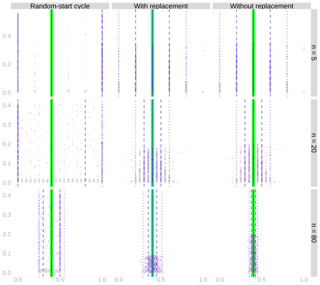
Increasing the sample size narrows each distribution in this picture. Without replacement it narrows faster: using up most of the population leaves fewer ways for the sample average to vary.
The random-start cycle illustrates the other direction. Consecutive people in this ordered population often have the same response. On the four-person population in the last chapter, the cycle came out the same as sampling without replacement; it is the long runs of equal responses here that make it wider. At the sample sizes shown, their cross terms contribute positively, and the sample average has more variation than under independent sampling. Its individual draws are still uniform. In HW 5 you work out the variance of the sample proportion when we use this design for a different circle: n zeros followed by n ones, sampling n consecutive people.
Responses that aren’t zero or one
Nothing in this chapter used the fact that a response was zero or one. The expectation summed position times bar height, linearity regrouped a sum, uniform sampling averaged the population, and the variance averaged squared distances. All of that works on any numbers. It is worth seeing once on numbers that are not frequencies, because for binary responses \sigma^2=\theta(1-\theta), and a formula like that makes the variance look like a fact about the design when it is a fact about the responses.
These are years of education for 2,271 people from a survey of Californians, with mean 14.3 and standard deviation 2.5. Treat these survey rows as the population for this example; the green line marks its mean. When we average samples of these rows, each draw selects a row uniformly and independently, with replacement.
The variance is not a function of a frequency. It is the average squared distance from the mean, computed from those values the same way we computed \theta(1-\theta) from zeros and ones.
The same picture runs on them. Every person is a dot, the bars count them, and two of them carry arms through the transformation: someone with twelve years of education, -2.3 years below the mean, and someone with eighteen, 3.7 above. These distances are years rather than the small numbers in Figure 11.1, so squaring moves them much further: three years from the mean squares to nine.
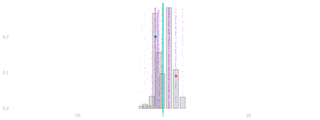
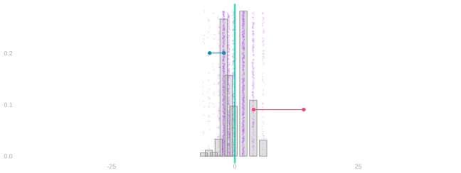
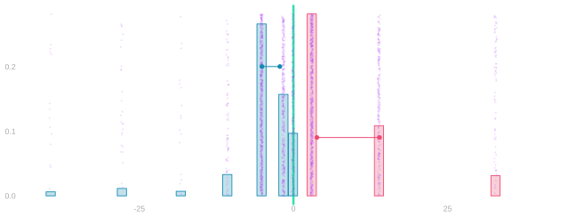
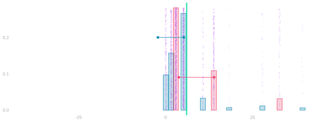
Data. Each dot is one person’s distance from the mean, in years. The bars count them, and their average is zero.
Barbells. Keep every dot. Connect the two marked people to their signed squares: about -2.3 moves to -5.2, and about 3.7 moves to 13.9. The sign still records which side of the mean the person came from.
Signed-square distribution. Replace the bars by the distribution of the signed squares. Teal came from below the mean, pink from above. A distance of a year or two stays near zero; the few people with eight years of education, or with twenty, move out to the edges of the picture.
Fold and average. Fold the negative side onto the positive side and keep the colors. The green line marks the average squared distance—the variance, 6.1. Its square root, 2.5 years, is the standard deviation.
For independent uniform draws from these survey rows, the standard deviation of the sample average is \sigma/\sqrt n. The derivation used independence, but it never required zero-one responses:
| calls | sd of the average |
|---|---|
| 4 | 1.23 |
| 16 | 0.62 |
| 64 | 0.31 |
Algebra Reference
Squaring Sums
\cb*{\sum_{i=1}^n Z_i}^2 = \sum_{i=1}^n \sum_{j=1}^n Z_i Z_j
This is a generalization of the identity (a+b)^2 = a^2 + 2ab + b^2 to more terms. You may be so used to that you don’t even think about what’s really happening. Here’s a version where I’m very explicit: it’s a product of two copies of (a+b), one pink and one teal.
(a+b)^2 = \textcolor{#EF476F}{(a+b)}\textcolor{#118AB2}{(a+b)} = \textcolor{#EF476F}{a}\textcolor{#118AB2}{a} + \textcolor{#EF476F}{a}\textcolor{#118AB2}{b} + \textcolor{#EF476F}{b}\textcolor{#118AB2}{a} + \textcolor{#EF476F}{b}\textcolor{#118AB2}{b} = a^2 + 2ab + b^2
Squaring Sums: More Terms
How do we generalize this to more terms? We’ll use the same color-coded-copies trick. It helps to count out the terms in our pink copy using i and in our teal copy using j.3 When we multiply out our sums, we get a product term for each pair of terms in the sum. Each product term involves one term in the pink sum and one term in the teal one.
\cb*{\sum_{i=1}^n Z_i}^2 = \textcolor{#EF476F}{\sum_{i=1}^n Z_i} \textcolor{#118AB2}{\sum_{j=1}^n Z_j} = \textcolor{#EF476F}{\sum_{i=1}^n} \textcolor{#118AB2}{\sum_{j=1}^n} \textcolor{#EF476F}{Z_i} \textcolor{#118AB2}{Z_j}
Optional: independence as a property of expectations
The factorization from the two-call table works for any functions f and g of independent finite-valued random variables X and Y: \begin{aligned} \mathop{\mathrm{E}}[f(X)g(Y)] &=\sum_x\sum_y f(x)g(y)P(X=x,Y=y)\\ &=\sum_x\sum_y f(x)g(y)P(X=x)P(Y=y)\\ &=\left\{\sum_x f(x)P(X=x)\right\} \left\{\sum_y g(y)P(Y=y)\right\}\\ &=\mathop{\mathrm{E}}[f(X)]\mathop{\mathrm{E}}[g(Y)]. \end{aligned} The reverse implication holds as well: if this property holds for every pair of functions f and g, then X and Y are independent. So the two are equivalent, and some people take the expectation property as the definition. To see why the reverse holds, let f and g be indicators, f=1_{=x} and g=1_{=y}. Their product 1_{=x}(X)1_{=y}(Y) is one when X=x and Y=y and zero otherwise, so \mathop{\mathrm{E}}[1_{=x}(X)1_{=y}(Y)]=P(X=x,Y=y) \qqtext{and} \mathop{\mathrm{E}}[1_{=x}(X)]\mathop{\mathrm{E}}[1_{=y}(Y)]=P(X=x)P(Y=y). If the expectation property holds for these f and g, every joint probability is the product of the two marginal probabilities. That is independence.
More Than Two Calls
With replacement, each call selects any one person with probability 1/m, and every sequence of n calls has probability 1/m^n. That is 1/m multiplied by itself n times, so the probability of the whole sequence is the product of the probabilities of its calls, P(J_1 \ldots J_n = j_1 \ldots j_n) = \frac1{m^n} = P(J_1=j_1) \cdots P(J_n=j_n). We say the calls are independent when this happens: when the probability that they select any given sequence of people is the product of the probabilities that each call selects its person on its own. For two calls, that is the factorization in the table above. For more, it asks more than that every pair factor; a sequence in which every pair factors but the whole does not can be built, though it takes some effort.
Equivalently, \mathop{\mathrm{E}}[f_1(J_1)\cdots f_n(J_n)]=\mathop{\mathrm{E}}[f_1(J_1)]\cdots\mathop{\mathrm{E}}[f_n(J_n)] \qqtext{for all functions} f_1 \ldots f_n. One direction is the regrouping from before with n sums instead of two. The other is indicators again.
What this way of thinking buys is that going from n calls down to fewer costs nothing. To keep calls i and j and drop the rest, let f_i and f_j be indicators and every other function the constant one. The constant factors have expectation one and disappear, P(J_i,J_j=k,l)=\mathop{\mathrm{E}}[1_{=k}(J_i)1_{=l}(J_j)]=\mathop{\mathrm{E}}[1_{=k}(J_i)]\mathop{\mathrm{E}}[1_{=l}(J_j)]=P(J_i=k)P(J_j=l). Any two calls are independent, and the same move keeps any set of calls. That is the counting argument above without the counting. And it is the cross term itself: with f_i=f_j=z in place of the indicators, \mathop{\mathrm{E}}[Z_iZ_j]=\mathop{\mathrm{E}}[Z_i]\mathop{\mathrm{E}}[Z_j].
See Section 11.9.1 for the squaring step beginning with (a+b)^2.↩︎
There is a way to see this without counting, in Section 11.10.↩︎
If we used i to count terms in both sums, we’d wind up with two different things we call i: one pink and one teal. Using i and j keeps the two copies distinct.↩︎